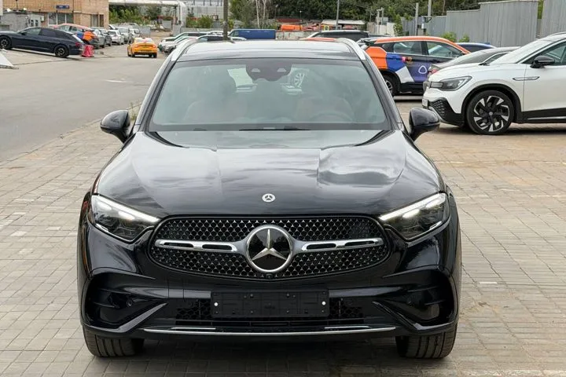

ОБЪЯВЛЕНИЕ АГЕНТСТВА
Mercedes-Benz GLC 300
Mercedes-Benz GLC 300 — 2026 год, 8 км. Цена и наличие требуют подтверждения.



8 550 000 ₽
Цена из объявления на 01.10.2026. Учтено снижение цены от 1 октября в ответе к исходному объявлению. Актуальность требует подтверждения.
- Кузов
- Кроссовер
- Год
- 2026 год
- Пробег
- 8 км
- Двигатель
- 2,0 л · бензин · 258 л.с. · 4MATIC
- Статус
- Наличие уточняйте
Исходное объявление опубликовано 16 сентября 2026 года. Позднее в канале опубликовано связанное снижение цены до 8 550 000 ₽.
Данные и фотографии из публикаций агентства. Дата публикации: 16.09.2026. Старые объявления не подтверждают наличие сегодня.
Позвонить Дмитрию ↗Канал агентства ↗Открыть интерактивную карточку ↗